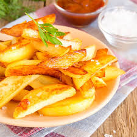

Home
Fries

French fries, or simply fries, also known as chips, and finger chips, are batonnet or julienne-cut deep-fried potatoes of disputed origin. They are prepared by cutting potatoes into even strips, drying them, and frying them, usually in a deep fryer.
Ingredients
- russet potatoes, peeled
- vegetable oil for frying
- all-purpose flour
- garlic salt
- onion salt
- paprika
- salt
Steps
- Slice potatoes into French fries and place them into a large bowl of cold water to prevent them from turning brown.
- Heat oil in a heavy saucepan or large skillet to 350 degrees F (175 degrees C).
- While the oil is heating, sift flour, garlic salt, onion salt, paprika, and salt into a large bowl. Gradually stir in enough water to make a slightly thick batter that can be drizzled from a spoon.
- Drain fries and pat dry; dip into the batter one at a time.
- Lower fries carefully into the hot oil in batches to prevent them from clumping together. Fry until golden brown and crispy on all sides, about 7 to 10 minutes.
- Drain fries on a paper towel-lined plate.
- Serve hot and enjoy!